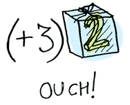
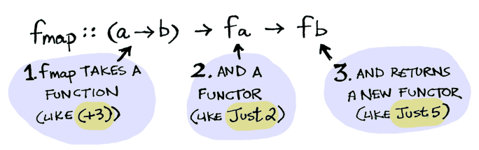
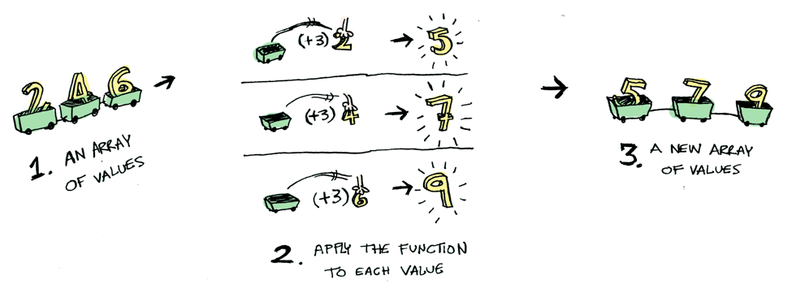
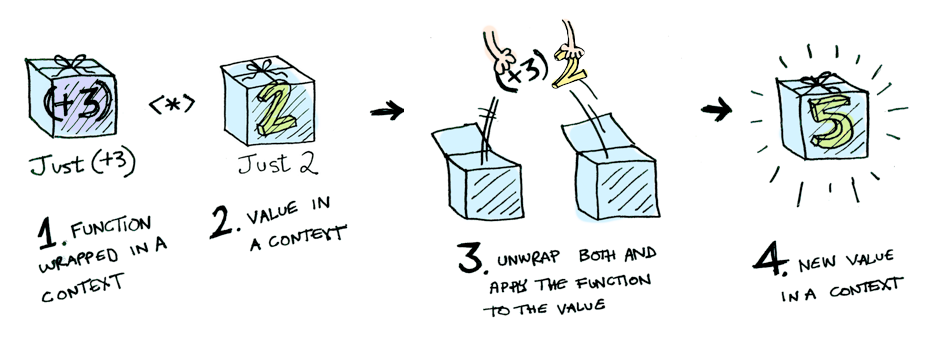

Haskell中的Monad是什么？
第一次听说Monad是在一个Scala Meetup上，后来试着了解Monad的概念，却头疼于Haskell的各种大部头的书和教程。再后来看到阮一峰在2015年发表的《图解 Monad》，虽然清晰易懂，但是脱离了Haskell，图片的表意和语言中的概念对不上。阮一峰的文章译自《Functors, Applicatives, And Monads In Pictures》，我阅读了原文。
前言
计算机程序用于控制计算机进行运算，程序操作的对象是各种不同类型的值，比如数值。这是一个简单的值2：

用函数对值进行一些处理，可以返回函数执行的结果，比如：
除了简单的数值类型，值也有可能被包含在一些上下文环境中，组成更复杂的值类型。可以把上下文环境想象成盒子，数值放在盒子里面，这个盒子整体作为一个值，描述为Just 2，也就是带盒子的2：

如果对Java有过了解，可以将这个盒子理解为包装类，比如Integer和int，对应带盒子的2和不带盒子的2。
Functors
面对带盒子的2，我们无法直接把+3的函数作用在它上面：

这时需要一个函数fmap来操作。fmap会先从Just 2中取出数值2，然后和3相加，再把结果5放回盒子里，返回Just 5：

fmap怎么知道该如何解析Just？换一个其他像Only之类的类型，还能解析吗？所以就需要Functor（函子）来完成定义的的操作。
Functor是一种数据类型：

Functor定义了fmap的行为：

fmap有两个入参和一个出参，入参分别是一个函数和一个带盒子的值，出参是一个带盒子的值，可以这样使用：
fmap (+3) (Just 2) |
回到Haskell，在Haskell的“系统类库”中有一个Functor的实例Maybe，Maybe中定义了fmap的行为，指定了面对Just类型的入参时对值进行操作：
instance Functor Maybe where |
表达式fmap (+3) (Just 2)的整个过程类似这样：

同理，从Maybe的定义中能看出，如果传入fmap的第二个参数是Nothing，函数将返回Nothing，事实确实如此：

fmap (+3) Nothing |
现在假设一个Java的场景，用户使用工具类Request发起一个向服务器的请求，请求返回的类型是Response，Response是一个实体类，可能包含所需数据data也可能不包含：
Response res = Request.get(url); |
使用Haskell中fmap的写法就变成了：
fmap (get("data")) (Response res) |
当然Haskell不存在get("data")这样的写法，可以将由Response获取Response.data的操作封装为函数getData，然后传入fmap作为第一个参数。
Haskell提供了fmap函数的语法糖<$>简化fmap的写法：
getData <$> (Response res) |
再来想一个问题，Haskell的函数是如何对列表进行操作的？函数会对列表的每一个元素都进行计算，然后返回列表：

其实列表也是Functions，这是列表的定义：
instance Functor [] where |
Applicatives
Applicatives是另一个概念，我们之前说数据被放在盒子里，如果函数也被放在盒子里呢？

Haskell的系统提供了操作符<*>用于处理盒子里的函数：

例如：
Just (+3) <*> Just 2 == Just 5 |
使用<*>还可以完成一些有趣的操作，比如分别让列表中的元素*2和+3：
[(*2), (+3)] <*> [1, 2, 3] |

Monads
函数的执行是使用带入参的函数处理值，涉及到三个角色。Functors是被处理的值放在盒子里，Applicatives是函数放在盒子里，Monads则是将函数的入参放在盒子里。Monads有一个操作符>>=来实现Monads的功能。假设现在有一个函数half的入参是数值，如果是偶数就除以2，否则返回Nothing:
half x = if even x |

想要给half传一个Just类型的值怎么办？

>>=可以解决这个问题：
Just 3 >>= half |
>>=操作符把Just 3变成了3放在half中进行计算。Monad是一个数据类型，定义了>>=的行为：
class Monad m where |

这里的Maybe是一个Monad（和上文的Maybe同时存在）:
instance Monad Maybe where |
>>=还支持链式的操作：
Just 20 >>= half >>= half >>= half |
小结
虽然Haskell的Monad比较有名，但实际上涉及到三个概念Functors、Applicatives和Monads，可能Monad的应用比较广泛一点。在数据处理上，FP并不比OOP高级，逻辑是相似的，只是写法不同。面对同样的问题使用不同的思维方式和表达方式去解决，对应了不同的编程思想和编程范式。世界上有很多精妙的理论等待我们探索。